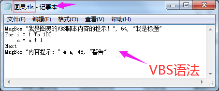

| 命令名称 | RunVBScript 运行VBS脚本 |
| 命令功能 | 运行VBS脚本命令内容 |
| 语法格式 | ret = TURING.RunVBScript(sText,Items) |
| 参数说明 |
sText：字符串型，脚本命令内容/或者vbs脚本文件 Items：变体型，可选，指定函数的参数值（可以设置16个哦，每个参数用逗号隔开） |
| 返回值 | ret：字符串型，执行结果 |
| 按键精灵 |
复制代码
'写法1：(普通语句)
'注意：单引号需用双引号进行转义
脚本内容 = "MsgBox ""我是VBS脚本内容的提示！"", 64, ""我是标题"""
Call TURING.RunVBScript(脚本内容)
'写法2：(普通语句)
脚本内容 = "For i = 1 To 100" & vbCrLf
脚本内容 = 脚本内容 & "a = a + 1" & vbCrLf
脚本内容 = 脚本内容 & "Next" & vbCrLf
脚本内容 = 脚本内容 & "MsgBox ""计算结果："" & a, 48, ""警告"""
Call TURING.RunVBScript(脚本内容)
'写法3：（函数语句内容）
脚本内容 = "Function ShowTime(i,n)" & vbCrLf
脚本内容 = 脚本内容 & "MsgBox ""你是："" & i+n" & vbCrLf
脚本内容 = 脚本内容 & "ShowTime = Now" & vbCrLf
脚本内容 = 脚本内容 & "End Function"
参数1 = 100
参数2 = 150
TracePrint TURING.RunVBScript(脚本内容, 参数1, 参数2)
'写法4：(脚本文件内容)
'加载脚本文件进行运行
Call TURING.RunVBScript("C:\图灵.tls")
|
| 易语言 |
复制代码
.版本 2 .子程序 子程序1 .局部变量 图灵, 类_TURING .局部变量 返回值, 文本型 .局部变量 脚本内容, 文本型 .局部变量 参数1, 变体型 .局部变量 参数2, 变体型 图灵.创建对象 () ' 写法1：(普通语句) 脚本内容 ＝ “MsgBox ” ＋ #引号 ＋ “我只是一个普通的文本提示啊！” ＋ #引号 返回值 ＝ 图灵.引擎_运行VBS脚本 (脚本内容) 输出调试文本 (“识别结果1：” ＋ 到文本 (返回值)) ' 写法2：（函数语句内容） 脚本内容 ＝ “Function ShowTime(i,n)” ＋ #换行符 脚本内容 ＝ 脚本内容 ＋ “MsgBox ” ＋ #引号 ＋ “你是：” ＋ #引号 脚本内容 ＝ 脚本内容 ＋ “ & i+n” ＋ #换行符 脚本内容 ＝ 脚本内容 ＋ “ShowTime = Now” ＋ #换行符 脚本内容 ＝ 脚本内容 ＋ “End Function” 参数1.赋值 (100, ) 参数2.赋值 (150, ) 返回值 ＝ 图灵.引擎_运行VBS脚本 (脚本内容, 参数1, 参数2) 输出调试文本 (“识别结果2：” ＋ 到文本 (返回值)) ' 写法3：(脚本文件内容) 返回值 ＝ 图灵.引擎_运行VBS脚本 (“C:\图灵.tls”) 输出调试文本 (“识别结果3：” ＋ 到文本 (返回值)) |
| UiBot |
复制代码
Import TURING
dim 脚本内容
TracePrint TURING.Version()
'写法1：(普通语句)
'注意：单引号需用\进行转义
脚本内容 = "MsgBox \"我是VBS脚本内容的提示！\", 64, \"我是标题\""
TURING.RunVBScript(脚本内容)
'写法2：（函数语句内容）
脚本内容 = "Function ShowTime(i,n)" & "\r\n"
脚本内容 = 脚本内容 & "MsgBox \"你是：\" & i+n" & "\r\n"
脚本内容 = 脚本内容 & "ShowTime = Now" & "\r\n"
脚本内容 = 脚本内容 & "End Function"
dim 参数1 = 100
dim 参数2 = 150
TracePrint TURING.RunVBScript(脚本内容, 参数1, 参数2)
'写法3：(普通语句)
脚本内容 = "For i = 1 To 100" & "\r\n"
脚本内容 = 脚本内容 & "a = a + 1" & "\r\n"
脚本内容 = 脚本内容 & "Next" & "\r\n"
脚本内容 = 脚本内容 & "MsgBox \"计算结果：\" & a, 48, \"警告\""
TURING.RunVBScript(脚本内容)
'写法4：(脚本文件内容)
'加载脚本文件进行运行
TURING.RunVBScript("C:\\图灵.tls")
|
| 脚本文件 |  |